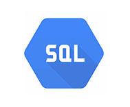

-
DDL Data Definition LanguagePengertian DDL (Data Definition Language) DDL adalah singkatan dari Data Definition Language yaitu kumpulan perintah pada SQL untuk menggambarkan desain dari database secara menyeluruh, selain itu DDL (Data Definition Language) juga digunakan untuk membuat, merubah maupun menghapus struktur atau definisi tipe data dari obyek yang ada pada database.
-

DML Data Manipulation LanguageDML atau Data Manipulation Language adalah kumpulan perintah query yang digunakan untuk memanipulasi data dalam tabel, seperti menambah, merubah atau menghapus data. Perintah ini tidak terkait dengan struktur dan metadata dari objek-objek yang berada pada tabel-tabel database.
-

SQL Structured Query LanguageSQL (Structured Query Language) adalah bahasa pemrograman khusus yang digunakan untuk memanajemen data dalam Relational Database Management Systems. SQL biasanya berupa perintah sederhana yang berisi instruksi-instruksi untuk manipulasi data. Perintah SQL ini sering juga disingkat dengan sebutan ‘query‘.